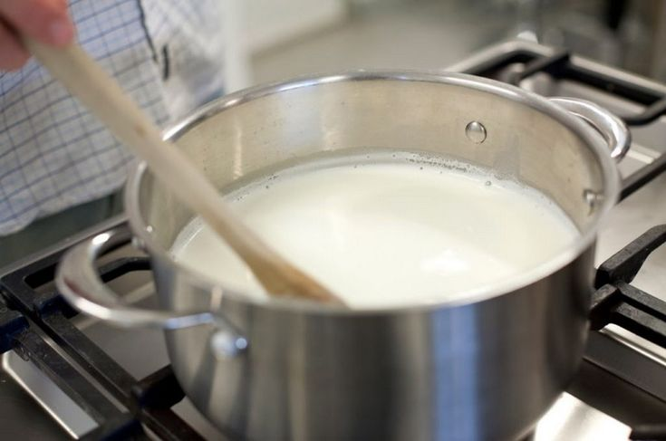

Новогодние рецепты для каждого


1. Разломайте шоколад на маленькие кусочки или порубите ножом.
2. Налейте молоко в сотейник, предварительно сполоснув сотейник холодной водой. Нагрейте на небольшом огне. Когда молоко уже горячее, всыпьте шоколад и начинайте мешать венчиком. Готовьте до полного растворения шоколада.

3. Добавьте сахар, доведите молоко почти до кипения (не кипятите!) и разлейте по подогретым чашкам.
4. Если вы приготовите этот шоколад заранее – за пару часов – и просто подогреете перед тем, как подать, он будет значительно вкуснее. А если у вас есть хорошая морская соль из Бретани, добавьте в каждую чашку перед подачей буквально два-три кристалла – и у шоколада появится новый, очень интересный оттенок вкуса.
Создатель: Несолёная Полина Сергеевна
Все авторские права защищены
Новогодние рецепты от нашего талантливого сообщества
Возможно размещение рекламы
этот шедевр был сотворён руками Несолёной Полины в студии Iteen Academy